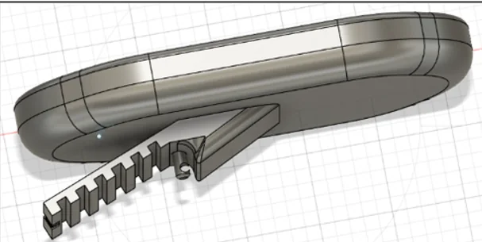
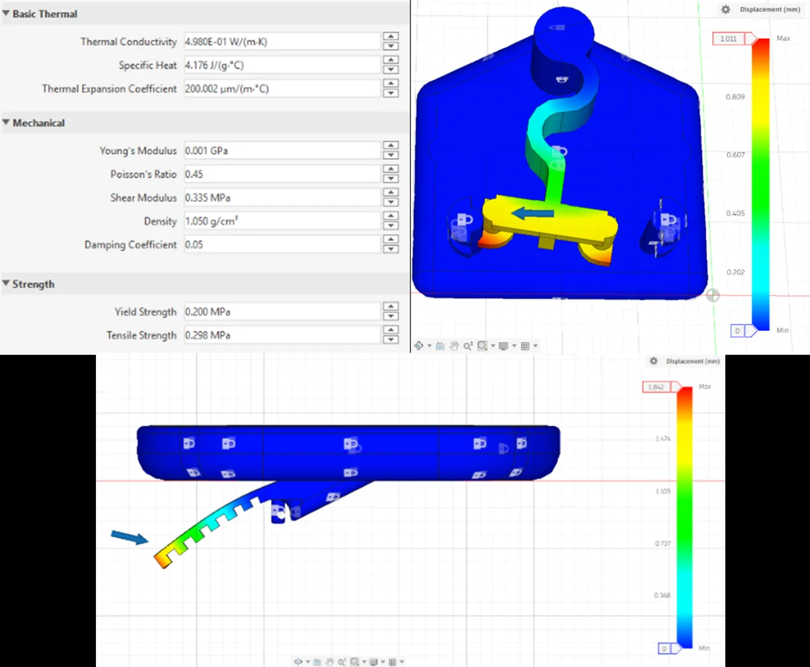
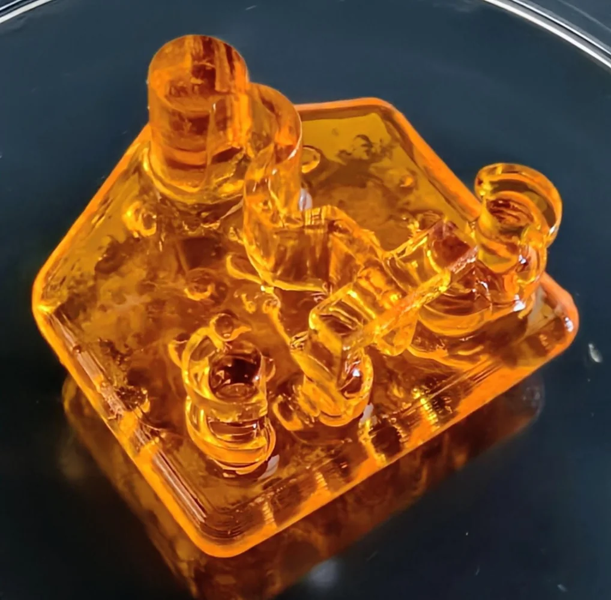

BioBoat Bioactuator
A team project exploring how a living skeletal-muscle actuator could be coupled to a 3D-printed PEGDA raft and rudder mechanism to produce controlled swimming motion.
BioBoat forced me to design with biology as an active engineering component. The actuator had its own geometry, maturation requirements, force limits, and environmental needs, so the mechanical design had to respond to the biology.
The concept
The team aimed to create a small bioactuated swimming device in which a skeletal-muscle ring would pull a movable rudder. The mechanism was designed to keep the biological actuator immersed in culture medium while converting contraction into directional motion.
My contribution
I worked on CAD design, simulation, printing, and mechanical testing for the BioBoat 2 concept. My design work focused on the raft and rudder geometry, attachment points, buoyancy, printability, and how a compliant propelling element could respond to muscle-generated force.
Engineering around a biological actuator
The mechanical system had to be light enough to float, rigid where loads were transferred, compliant where motion was desired, and compatible with the muscle-ring geometry. This created a different design problem than a conventional motor-driven mechanism because actuator performance depended on cell culture and tissue maturation.
Validation and limitations
The team used computational modeling and mechanical testing to evaluate the designs. Biological contraction was a stretch goal and did not reach the level needed for full functional swimming validation, so the project became a useful lesson in designing experiments around uncertain biological performance rather than treating that uncertainty as a separate issue.
Selected visuals



What it added to my engineering perspective
BioBoat strengthened my interest in tissue-engineered technologies and showed me how mechanical design, biomaterials, fabrication, and physiology can be combined as parts of the same system.